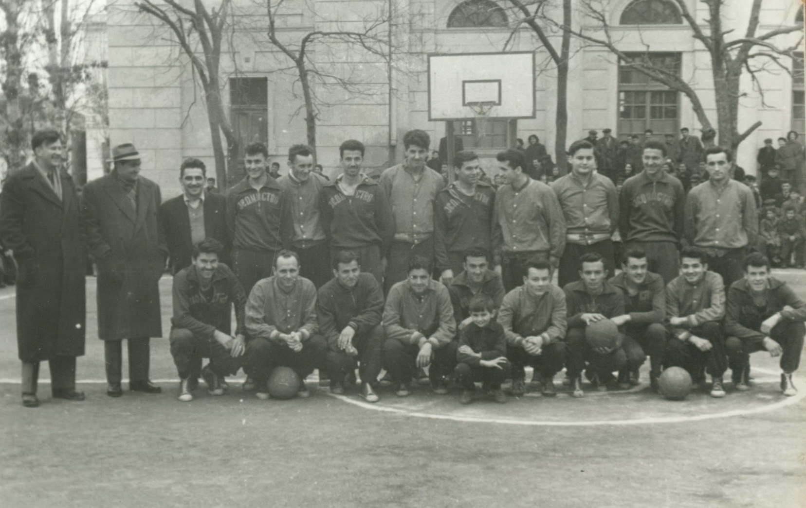
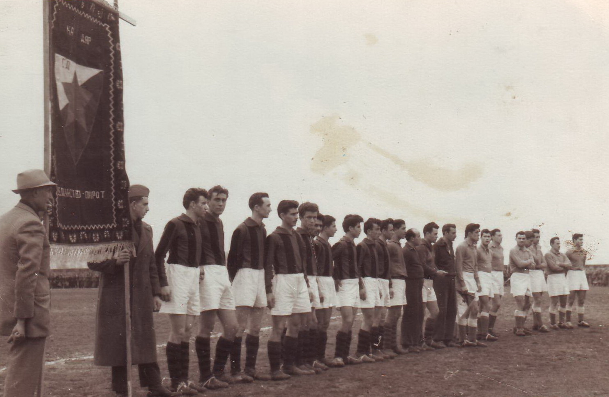
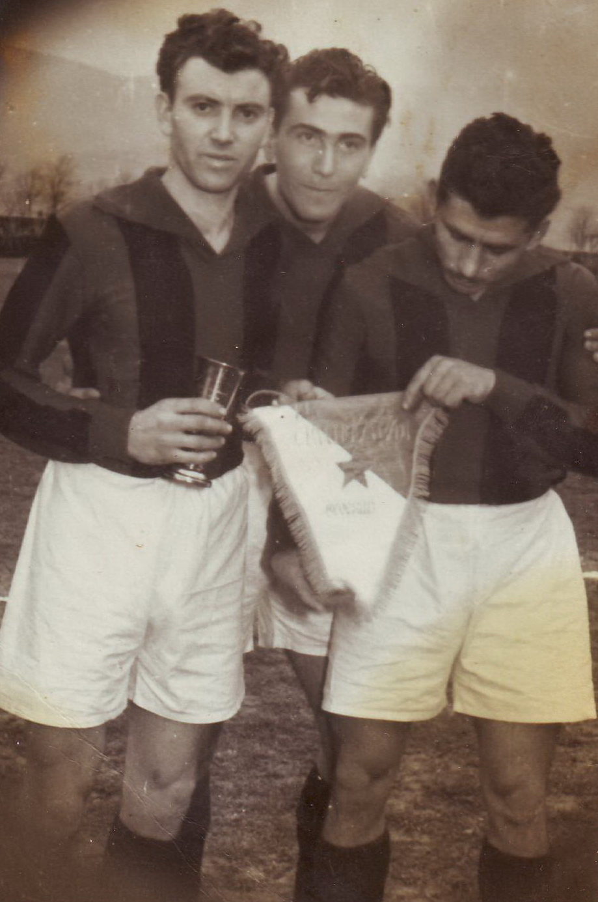
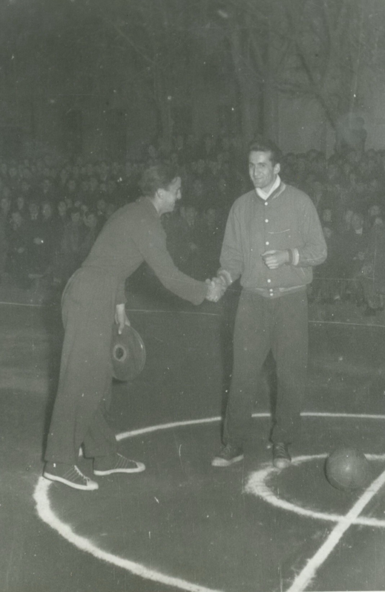
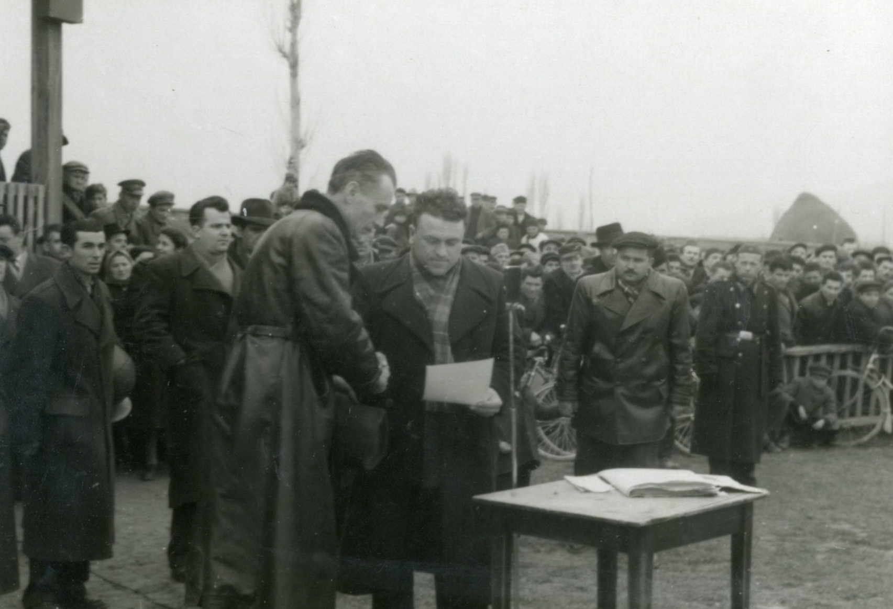

Godina osnivanja

Osnovano da bi večno postojalo. Više od devedeset godina tradicije, ponosa i zajedništva.
Pirotski fudbal ima korene još u prvim godinama između dva svetska rata. Kada je 1927. godine u Novoj Maloj formiran loptački klub „Jedinstvo", započeta je priča koja traje do danas. Rivalstvo i strast koji su tog prvog dana zapljusnuli pirotske terene nikada nisu ugašeni.
Marta 1932. formirana je Nišavska loptačka župa — pet klubova, jedinstven duh: Omladinac, Jedinstvo, Pobeda, Napredak i Gnjilan. Pirot je već tada imao razvijenu fudbalsku scenu, a Jedinstvo je na njoj zauzimalo posebno mesto.
Prve lopte dolazile su iz Francuske — zahvaljujući braći Nikolić koji su ih doneli kući posle boravka u inostranstvu. Prve utakmice igrale su se u dvorištu Gimnazije, pred retkim gledaocima koji su tek upoznavali ovu novu igru.

Vreme prvih lopti i prvih terena. Entuzijazam koji ne poznaje granice ni uslove. Fudbal dolazi u Pirot i odmah pronalazi vernike. Braća Nikolić donose prvu pravu loptu iz Francuske, a dvorište Gimnazije postaje prvo igralište.
OsnivanjeDecenijama Jedinstvo gradi sopstveni identitet. Generacije navijača i igrača tkaju tkivo kluba. Usponi i padovi, promene liga i naziva — ali identitet ostaje nepromenjen: crno-žuti dres, pirotski ponos.
TradicijaNovi vek, nova energija. Klub se vraća na staze slave. Viceprvak Pirotske okružne lige, takmičenje u Zoni Istok, i ambicije koje rastu svakom sezonom.
RastSve što su generacije igrača, trenera i navijača gradili više od devedeset godina — 'sabrano' je u jednoj knjizi. Monografija Sportskog društva Jedinstvo iz pera Borivoja Petrovića je dokument koji pamti ono što bi pamćenje zaboravilo.
Od ratnih i posleratnih godina, sve do modernih takmičenja u Zoni Istok — svaka stranica je svedočanstvo o tome koliko fudbal znači jednom gradu i jednoj zajednici.
„Formirano da bi večno postojalo" — ne samo kao naziv monografije, već kao obećanje svakom navijaču koji je ikada bodrio crno-žute.— Monografija SD Jedinstvo, Borivoje Petrović
Promocija monografije održana je u svečanoj sali pirotske Gimnazije.


